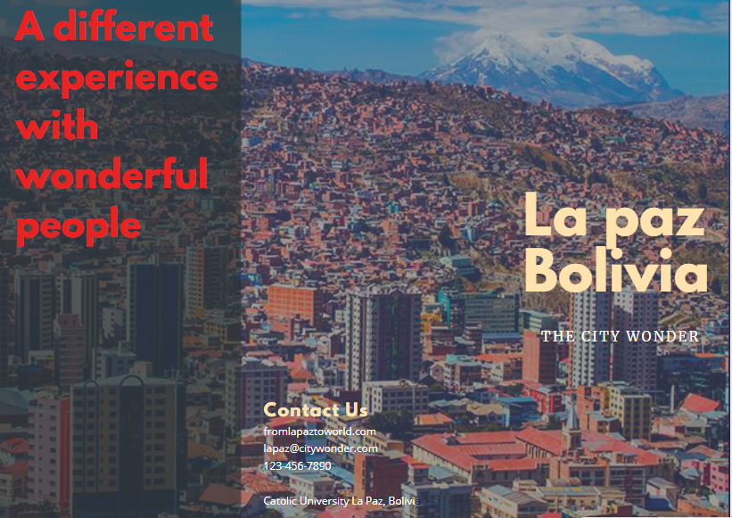

9.CRM


ABOUT THE TOP 10 OF TRAVELING PLACES AROUND THE WORLD
In recently years, travelling beyond being just a way of entertainment and just an activity to escape from responsibilities and take a breath from stress of your own environment; it has becomed in one of all the necessities that people have to feel alive and healthy. Taking into account that every year the number of destinations around the world extends, now I will show some of the best travelling places you could visit in 2019. According to U.S. News & World Report´s Top 30 best places to visit in 2018- 2019, the top 10 of most recommended are: Argentina, Dubai, Thailand, New Zealand, London, Polynesia, Rome, U.S.A, and France. Forbes Magazine and other tops also includes: Mexico, Cuba, Colombia and the Caribbean within its lists. Most of this destinations contemplate to have a great time and the experience of different types of tourism which are trends currently. In spite of the magnificence and the amusement that the visit to these beautiful places represents, especially in countries such as Bolivia, certain aspects of disadvantage. Two barriers that prevent the realization of a foreigner could be: First, the cost of an abroad journey represents a luxury for people who do not receive enough salary. And the processing time of the visa, insurance and travel agenda involve relatively long periods of time. Despites the disadvantages, constancy of saving money and determination, could be key to have the opportunity to pay for an abroad trip or just make a complete tour around some touristic places in their country that they have not known yet. According to the national institute of statistics in Bolivia (INE), in 2016 the percentage of visitors to the territory had grown by 8.8%, showing that the number of people traveling is growing over the years. The tourist activity is growing and expanding in the world market quickly. Despites the barriers such as the cost and time a trip requires. However, traveling is like in all activity a matter of priorities and affinities that has become common in people who want to live their lives fully. Many times it is said that the memories that a trip brings you are much more valuable than the money and time you may have during the entire existence.
Vocabulary
- 1.CRM: Customer relationship management refers to the combination of activities, strategies and technologies that companies use to manage and analyze interactions and data of their current and potential customers.
- 2.MARKETING: Management process through which products and services move from concept to the customer. It includes identification of a product, determining demand, deciding on its price, and selecting distribution channels. It also includes developing and implementing a promotional strategy.
- 3.STREAMLINE PROCESSES: Activities used to improve the efficiency of a business or organization by simplifying or eliminating unnecessary steps.
- 4.COSTUMER LOYALTY: The fact of a customer buying products or services from the same company over a long period of time.
- 5.CRM SOFTWARE: Technology which records customer contact information such as email, telephone, social media profile, and others.
- 6.CRM SYSTEM: A kind of system which organizes the CRM software information recorded from individuals and companies and uses it for company purposes.
- Melany Rivera Vega
Next